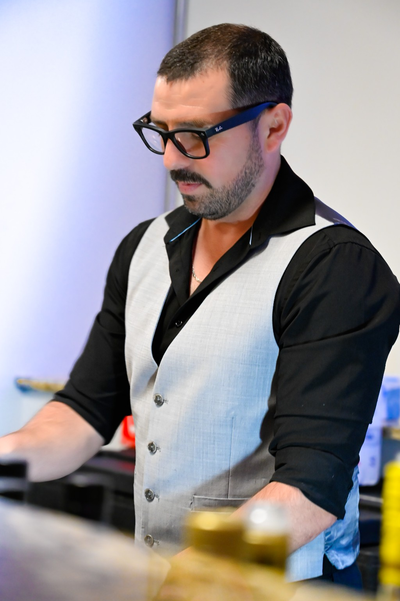
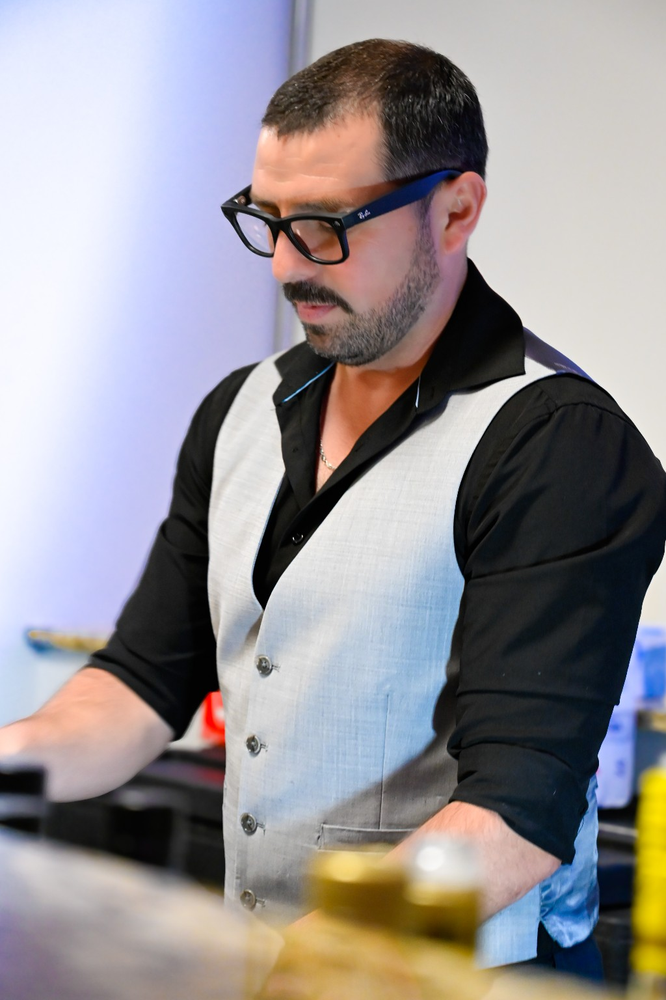
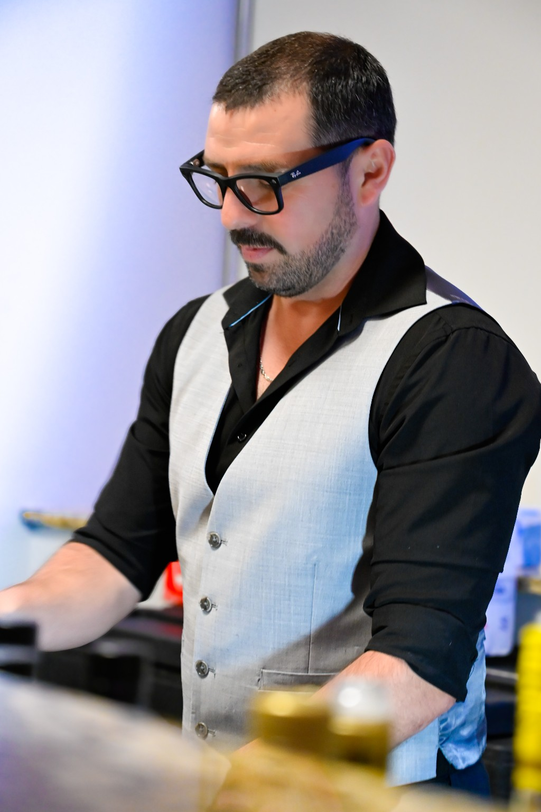
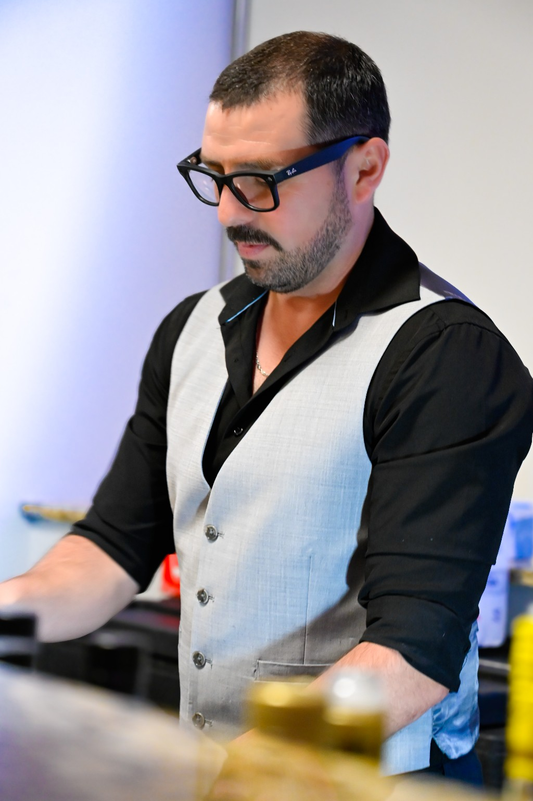

"La fotografÃa es el único lenguaje que puede ser entendido y comprendido en todo el mundo"
"Capturando momentos, creando recuerdos"
"La vida es una pelÃcula, la muerte es una fotografÃa"


 

 
